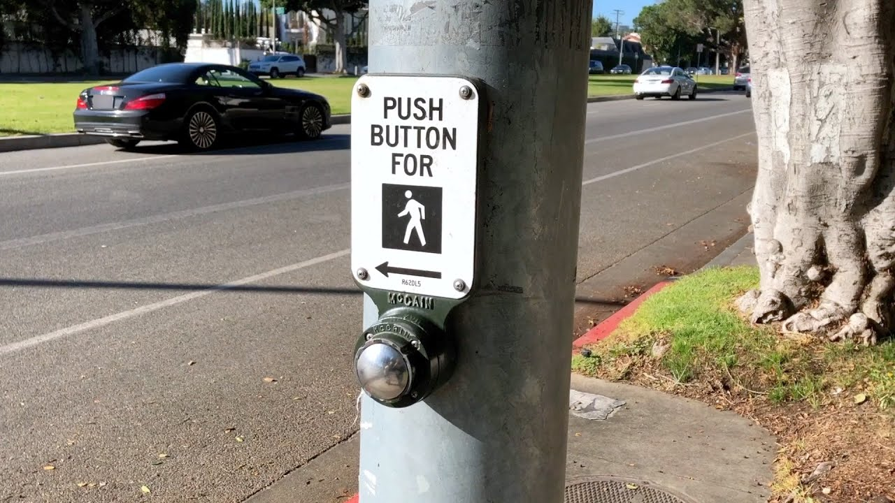
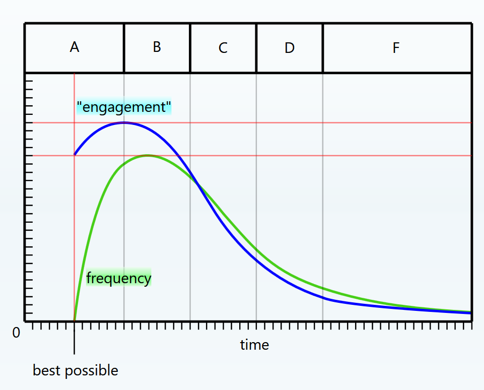

The Psychology of Speed
Simon Hearne
Web Performance Solutions Engineer @ Akamai
We've all seen the studies...
 |
Walmart sees 1% increase in revenue for every 100ms improvement |
 |
Staples saw a 10% increase in conversion rate when reducing homepage load time by one second |
 |
AliExpress saw 10.5% increase in conversions when reducing load time by 36% |
We've all seen the studies...
 |
The BBC loses an additional 10% of users for every additional second it takes to load |
 |
Pinterest improved load time by 40% and saw 15% increase in SEO traffic and 15% increase in conversions |
 |
The Financial times increased user engagement by 30% when they released the new, performance focused FT.com |
Banks understand that they need to create high-performance and reliable apps to conserve their market share and meet client expectations.
Top 5 Critical Issues for Testing Mobile Banking Apps - Finextra 2018
What do we mean by speed?
There are plenty of technical measures

What actually matters? 🤔
- Is it working?
- Is it useful?
- Is it interactive?
Is it working?
Is it working?
- Time to First Byte
- First Paint
Is it useful?
Is it useful?
- DOM Content Loaded
- First Contentful Paint
- Time to Visually Ready*
*mPulse only
Is it interactive?
Is it interactive?
- Time to Interactive
- First Input Delay
- Rage Clicks*
*mPulse only
User Timing API 🦄
window.addEventListener(
'scroll',
()=>{
performance.mark('first-scroll');
},
{once: true, capture: false, passive: true}
);
*probably don't use this in production
Timer Summary
| Time to First Byte (TTFB) | The speed of the delivery stack |
| DOM Content Loaded (DCL) | The speed of critical dependencies |
| DOM Ready | How fast the page is parsed |
| First Paint (FP) | The first time something is rendered |
| First Contentful Paint (FCP) | When the user might first see content |
| Time To Visually Ready (TTVR) | When key content is rendered |
| Page Load Time (PLT) | When the page is complete |
| Time To Interactive (TTI) | When the app is first responsive to input |
| Time to First Interaction (TTFI) | When a user first tries to interact |
| First Input Delay (FID) | How long it takes to respond to input |
< psychology >
Objective vs Subjective time
Users don't measure your speed with a stopwatch
How long does a minute feel?

How long does a minute feel?

Does a minute feel longer to some people?


A new experience-centered generation, with higher expectations and lower loyalty appears, pressuring banks to review their online services.
Deloitte Luxembourg Digital Banking Benchmark, 2019
Our perception of time is subjective...
...but our measures are objective
What about web performance?
Perception is 15%-35% slower than objective measures
(more waiting room than romantic evening)
Find the metric closest to user perception*
*this depends entirely on your app!
The impact of 500ms
We cannot control expectation
satisfaction = perception - expectation
But we can optimise perception...
Slow elevators...
Waiting for baggage...
Crossing the street...
We can do this on the web!
Progressive loading
Skeleton UI
Optimistic UI
Progress Indicators
Speed? 🚀
we found a good correlation between a faster login time and a better user rating. Challengers are in the lower quartile with logins under 6 seconds! In contrast, the average login for incumbents was a sluggish 12 seconds
When it comes to mobile banking apps, what makes a winner? - Visa 2018
How can we measure speed?
- Synthetic Tests
- Application Monitoring
- Analytics
- Real User Monitoring
< psychology >
Just Noticeable Difference
Faster, slower or the same?
The 20% Rule: "Designing and Engineering Time" by Steven C. Seow, Ph.D.
So what?
Get 20% faster for existing customers to notice
Be 20% faster than your peers & competitors
Measuring Engagement 😑
What do you do when you feel engaged?
- Hang around
- Click on things
- Complete an action
Performance metrics correlate with engagement(session length)
~1Bn mPulse pageview beacons - early March 2019
HCI Principles
- Give feedback within 100ms
- Update every 1,000ms
- Complete actions within 3,000ms
* on all devices
Goals for maximum engagement
| Timer | Goal Speed |
|---|---|
| First Input Delay (FID) | 100ms |
| First Contentful Paint (FCP) | 1,000ms |
| Time To Visually Ready (TTVR) | 3,000ms |
| Time To Interactive | 3,500ms |
Based on aggregate data - what are yours?
Measuring against your goals
What percentage of user experiences achieve the goal?
perfScore = beacons faster than goal / total beacon countPerformance Regions
Conclusions ✍️
- Speed is a critical factor in UX
- How do your customers track speed?
- What difference would 500ms make?
- Akamai delivery products improve speed
- TODO
- TODO
- DPM solutions provide the data
- mPulse tracks real user experience
- CloudTest provides actionable insight under load
< psychology >
There are no guarantees on performance
but you can buy some time
Anticipate Behaviourcheat with mouse events
| Event | Free Time! |
|---|---|
| touchStart | - |
| mouseOver | - |
| mouseDown | - |
| click | - |
Use to anticipate navigations, product viewer actions etc.